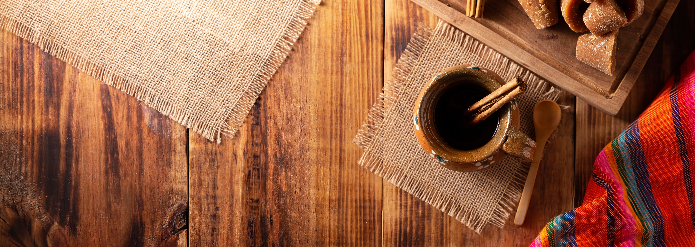

Rooted in Culture. Brewed for the block.

Chico Soul Cafe is a locally owned coffee shop established in 2026, inspired by Mexican flavors and Chicano culture. Where everything in our neighborhood is accessible to those who live in it. Come vibe with us!
1111 North Broadway, Santa Maria, California
805-878-1111
805-878-1111